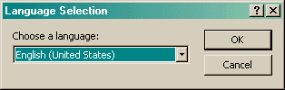

The Language Selection dialog allows you to change the language of the program while it is running.

Languages are supported through the use of resource DLLs. When the program starts, it searchs for any DLLs in its directory. If there are none, the menu to start this dialog is disabled. By default, current Windows operating systems will recognize these DLLs and use one that matches the language of the system if possible. The first time the program runs, it will prompt for which language to use. Subsequently, the program will remember that language and use the last selected language.